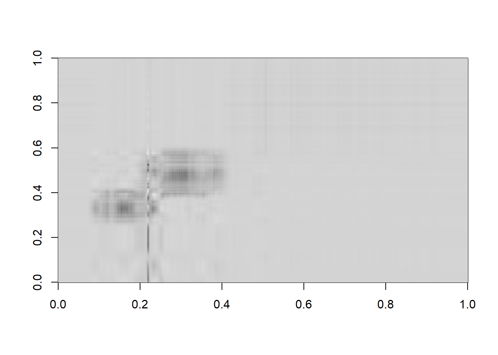
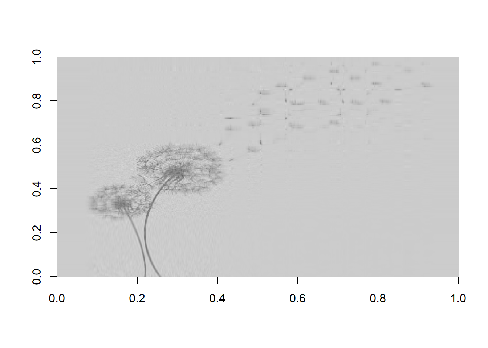
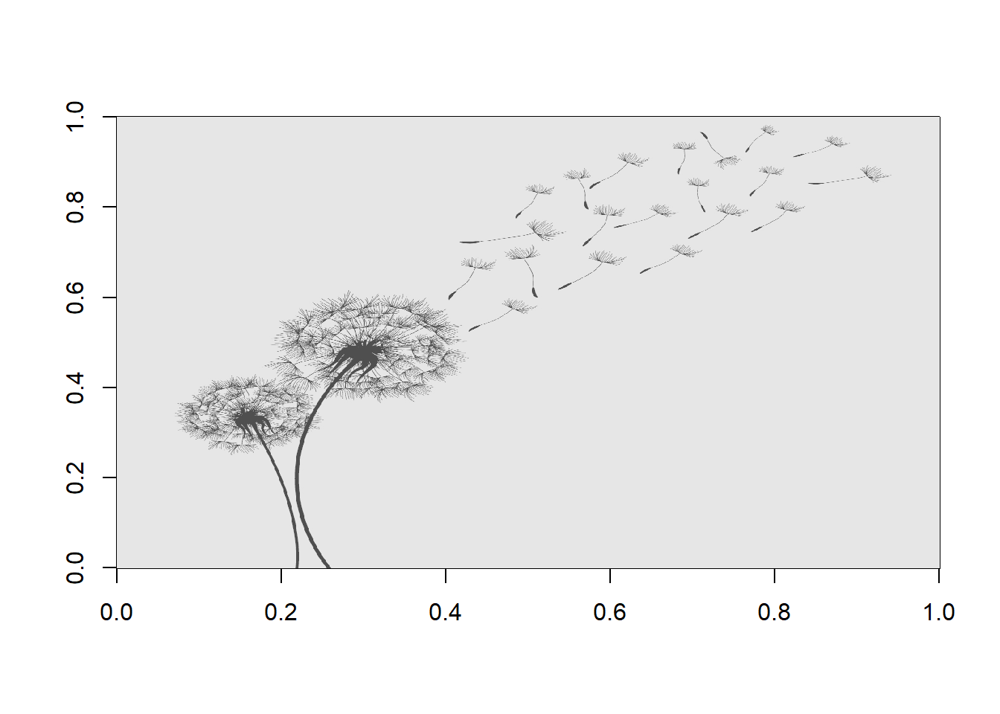

library(jpeg)
library(RCurl)assignment 1 question 2
2. Proofs & SVD Example
A. Prove that \(A \times B \neq B \times A\)
# --------------
# AB <> BA
# --------------
# define two 3x3 matrices A and B
A <- matrix(c(1,2,3,
4,5,6,
7,8,9),
nrow = 3, byrow = TRUE)
B <- matrix(c(1, 0,-1,
1, 2, 0,
0,-1, 1),
nrow = 3, byrow = TRUE)
A%*%B [,1] [,2] [,3]
[1,] 3 1 2
[2,] 9 4 2
[3,] 15 7 2B%*%A [,1] [,2] [,3]
[1,] -6 -6 -6
[2,] 9 12 15
[3,] 3 3 3B. Prove that \(A^T*A\) is always symmetric.
The matrix \(A^T \times A\) is always symmetric because by transposing any matrix \(A\) with dimensions \(m \times n\), we get a matrix \(A^T\) with dimensions \(n \times m\). This has two implications for multiplying \(A^T \times A\):
The multiplication \((n \times m) \times (m \times n)\) always works because the number of columns in the first matrix (\(m\)) match the number of rows(\(m\)) in the second, which makes matrix multiplication possible.
The resulting matrix has dimensions \(n \times n\), which is square and symmetric, because the dimensions are defined by the number of rows in the first matrix (\(n\)) and the number of columns in the second matrix (also \(n\)).
# Matrix A from above:
A [,1] [,2] [,3]
[1,] 1 2 3
[2,] 4 5 6
[3,] 7 8 9# Transpose of A:
t(A) [,1] [,2] [,3]
[1,] 1 4 7
[2,] 2 5 8
[3,] 3 6 9# Transpose of A times A:
t(A) %*% A [,1] [,2] [,3]
[1,] 66 78 90
[2,] 78 93 108
[3,] 90 108 126C. Prove that \(det(A^T \times A)\) is non-negative
\(A^T \times A\) results in a square matrix as shown above, so we can calculate a determinant.
And based on the theorem that \(det(A^T \times A) = det(A)^2\), it follows that the determinant of \(A^T \times A\) cannot be negative because any number times itself must be \(\geq 0\).
Therefore, if \(det(A^T \times A) = det(A)^2\) and \(det(A)^2 \geq 0\) then \(det(A^T \times A) \geq 0\).
# determinant of transpose of A times A:
det(t(A) %*% A)[1] -1.534772e-12D. Singular Value Decomposition (SVD) and Image Compression: Write an R function that performs Singular Value Decomposition (SVD) on a grayscale image (which can be represented as a matrix). Use this decomposition to compress the image by keeping only the top k singular values and their corresponding vectors. Demonstrate the effect of different values of k on the compressed image’s quality.
# import image and convert to matrix
my_url <- "https://raw.githubusercontent.com/AmandaSFox/DATA605/main/OC1Y7T0.jpg"
my_image <- readJPEG(getURLContent(my_url, binary = TRUE))
# check if three channels (RGB) and if so, extract one channel to make it grayscale
if(length(dim(my_image)) == 3) {
my_image <- my_image[, , 1]
}
# validate not three channels
dim(my_image)[1] 1300 1300# apply SVD and display components
my_svd <- svd(my_image)
# Extract components
U <- my_svd$u
S <- diag(my_svd$d)
V <- my_svd$v
# Reconstruct image FUNCTION
reconstruct_image <- function(k) {
U_k <- U[, 1:k] # First k columns of U
S_k <- S[1:k, 1:k] # Top k singular values
V_k <- V[, 1:k] # First k columns of V
img_k <- U_k %*% S_k %*% t(V_k)
return(img_k)
}
# Substitute different k values and create three new matrices:
img_k5 <- reconstruct_image(5)
img_k50 <- reconstruct_image(50)
img_k80 <- reconstruct_image(80)
# create function to correct rotation:
rotate_90 <- function(image_matrix) {
rotated_matrix <- t(image_matrix)[, ncol(image_matrix):1]
return(rotated_matrix)
}
# create three images, rotate 90 degrees and make them gray instead of red
my_image_k5 <- image(rotate_90(img_k5), col = gray.colors(256))
my_image_k50 <- image(rotate_90(img_k50), col = gray.colors(256))
my_image_k80 <- image(rotate_90(img_k80), col = gray.colors(256))my_image_orig <- image(rotate_90(my_image), col = gray.colors(256))